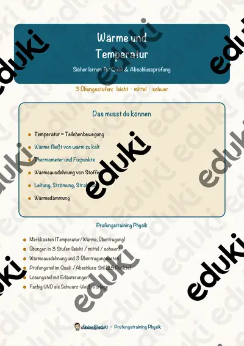
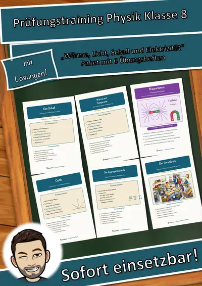

Materialpaket Lesespurgeschichten Physik Klasse 8 – Wärme und Energie: 12 Lesespuren mit Rätselaufgaben, dreifach differenziert
12 Lesespurgeschichten Physik für Klasse 8 – im Paket zum halben PreisDu suchst fertig vorbereitetes Lesematerial für Physik in Klasse 8 zum Themenbereich „Wärme und Energie“? Dieses Materialpaket bündelt 12 meiner Lesespurgeschichten in einem Download. Jede Lesespur ist sofort einsetzbar, dreifach differenziert (leicht ★ / mittel ★★ / schwer ★★★), mit Lösungsblatt für dich und in Farbe und Schwarz-Weiß enthalten. So arbeitet die ganze Klasse am selben Thema, jede und jeder liest auf dem eigenen Niveau, und du sparst dir die Vorbereitung.
Preisvorteil und Zeitersparnis: Einzeln gekauft kosten die 12 Materialien regulär zusammen 47,88 €. Im Paket zahlst du nur 23,94 € und sparst damit rund 50 %. Dazu sparst du dir das Zusammensuchen und Abstimmen: Alles passt schon zusammen, ist sofort einsetzbar und liegt in einem Download bereit. Alle Materialien sind sorgfältig gearbeitet, vom Autor geprüft und enthalten Lösungen bzw. Musterlösungen, sodass du dir auch die Korrektur-Vorbereitung sparst.
Die 12 Materialien im Paket
Der Backofen: Technikerin Frau Glut führt Mia und Tom Schritt für Schritt durch das Gerät.
Die Dampflokomotive: Übungsphasen, Wochenplan, Stationenlernen, Vertretungsstunden, Freiarbeit und Nachhilfe.
Die Dampfmaschine: Übungsphasen, Wochenplan, Stationenlernen, Vertretungsstunden, Freiarbeit und Nachhilfe.
Der Heißluftballon: Übungsphasen, Wochenplan, Stationenlernen, Vertretungsstunden, Freiarbeit und Nachhilfe.
Der Kühlschrank: Die Lernenden folgen einer spannenden Lesespur durch die Kältetechnik: vom Innenraum über Verdampfer, Kompressor und Verflüssiger zur Drossel und schließlich zum Thermostat – und verstehen dabei anschaulich, wie ein Kältemittel Wärme aufnimmt und wieder abgibt (Physik: Wärme, Wärmetransport, Verdampfen und Verflüssigen, Druck und Temperatur).
Der Nebel: Wetterforscherin Frau Wolke führt Mia und Tom Schritt für Schritt durch ein Flusstal – vom Flussufer über Wiese, Wetterhütte, Hygrometer, Senke und Brücke bis auf den Hügel und den Aussichtsturm in der Sonne.
Der Schnellkochtopf: Köchin Frau Dampf führt Mia und Tom Schritt für Schritt durch die Technik und Physik dahinter.
Das Thermometer: Physikerin Frau Grad führt Mia und Tom über ein Thermometer – von der Kuppe über Steigraum, Skala, Glasröhrchen, Flüssigkeitssäule und Kapillare bis zum Nullpunkt, Vorratsgefäß und zur Flüssigkeit.
Die Thermoskanne: Physikerin Frau Thermann führt Mia und Tom Schritt für Schritt durch die Kanne – vom Außengehäuse über Innenkolben, Doppelwand, Vakuum, Verspiegelung, Getränk, Stopfen und Schraubdeckel bis zum Tragegriff.
Der Toaster: Frühstücks-Expertin Frau Knusper führt Mia und Tom Schritt für Schritt durch Technik und Physik dahinter.
Der Wasserkocher: Technikerin Frau Watt führt Mia und Tom durch einen aufgeschnittenen Wasserkocher – vom Deckel über Dampföffnung, Ausgießtülle, Wasserstandsanzeige, Wasserbehälter, Heizspirale, Bodenplatte, Kontaktsockel und Ein-Aus-Schalter bis zum Griff.
Die Zentralheizung: Heizungstechnikerin Frau Warm führt Mia und Tom Schritt für Schritt dem Weg des warmen Wassers nach.
Lehrplanbezug (LehrplanPLUS Bayern, Sekundarstufe, Jahrgangsstufe 8)Physik, Jahrgangsstufe 8: Fachthemen: Der Backofen, Die Dampflokomotive, Die Dampfmaschine, Der Heißluftballon, Der Kühlschrank, Der Nebel, Der Schnellkochtopf, Das Thermometer u. a.Deutsch – Lesen, mit Texten und Medien umgehen: Die Schülerinnen und Schüler lesen die Geschichte sinnentnehmend, wenden Lesestrategien an und entnehmen gezielt Informationen, denn nur wer genau liest, findet die nächste Station.
Deutsch – Sprechen und Zuhören: Das Hörverstehen per QR-Code schult konzentriertes Zuhören; die Schülerinnen und Schüler entnehmen einem Sachhörtext die wesentlichen Informationen.
Deutsch – Schreiben: Die Schülerinnen und Schüler beantworten Fragen schriftlich, füllen einen Steckbrief aus und notieren das Lösungswort.
So funktioniert eine Lesespur
Die Schülerinnen und Schüler lesen ab START einen kurzen Abschnitt. Am Ende verrät ein Hinweis den nächsten Ort, den sie auf dem farbigen Plan suchen. Dort lesen sie weiter. An jeder richtigen Station sammeln sie einen Buchstaben, und eingeplante Sackgassen dienen der Selbstkontrolle. Am Ende ergeben die umgestellten Buchstaben ein geheimes Lösungswort.
Das ist in jeder Lesespur enthalten
Lesespurgeschichte in 3 Niveaus (leicht ★, mittel ★★, schwer ★★★)farbiger Plan als Suchkarte
Aufträge auf dem Weg (z. B. Quiz, Rechenaufgabe, Steckbrief)Hörverstehen mit QR-Code zum Hörtext
Rätselseite mit Wörter-Suchsel und Wissensfragen
Ausmalbild zum Themaausführliches Lösungsblatt für die Lehrkraftalles zusätzlich als drucksparende Schwarz-Weiß-Variante
Einsatzmöglichkeiten
Alle Materialien passen das ganze Schuljahr über, auch als Thema der Woche oder Werkstatt. Du kannst sie im Stationenlernen, in Freiarbeit und Wochenplan, in der Leseförderung und in Förderstunden einsetzen. In Vertretungsstunden funktionieren sie ohne Vorbereitung. Der Lehrplanbezug ist für Bayern ausgewiesen; die Materialien lassen sich in allen Bundesländern einsetzen.
Viel Freude mit deiner Klasse wünscht dir Snice!
Ähnliche Materialien

Materialpaket Lesespurgeschichten Physik Klasse 7: 6 Lesespuren mit Rätselaufgaben, dreifach differenziert

Materialpaket Lesespurgeschichten Physik Klasse 5: 4 Lesespuren mit Rätselaufgaben, dreifach differenziert

Energie und Arbeit – Prüfungstraining Physik (Klasse 9)

Prüfungstraining Physik: Wärme und Temperatur (Klasse 8)

Materialpaket Lesespurgeschichten Physik Klasse 8 – Elektrizität, Magnetismus und Optik: 10 Lesespuren mit Rätselaufgaben, dreifach differenziert

Materialpaket Prüfungstraining Physik Klasse 8 – Wärme, Licht, Schall und Elektrizität: 6 Übungshefte mit Prüfungsteil und Lösungen

Energie Lückentext mit Wortspeicher Hörverstehen und Suchsel